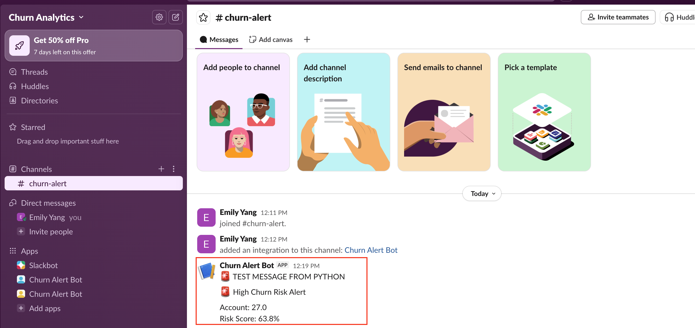
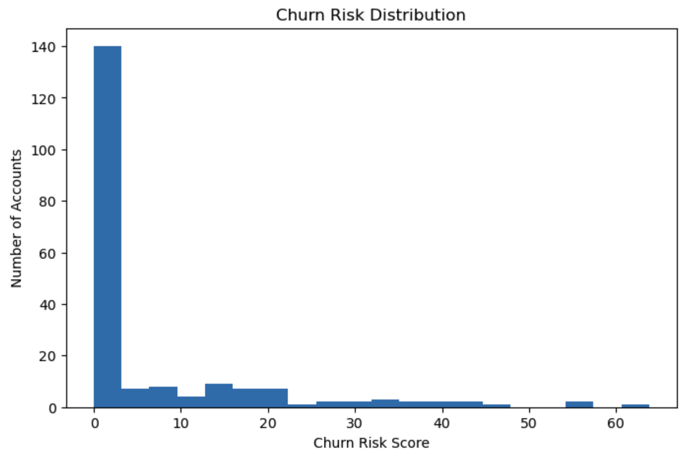
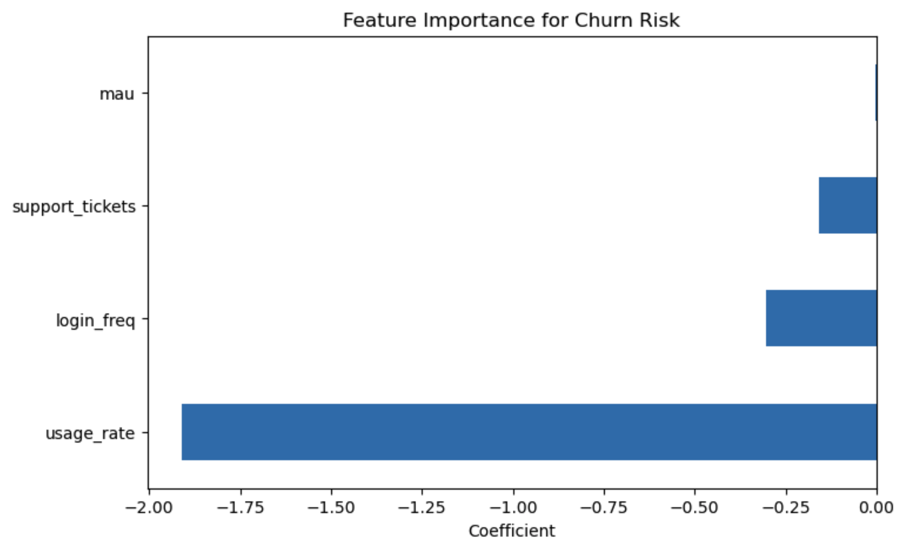
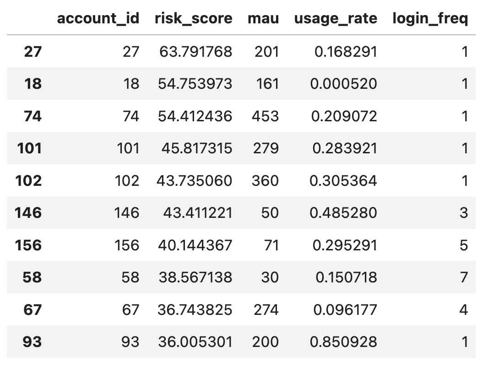
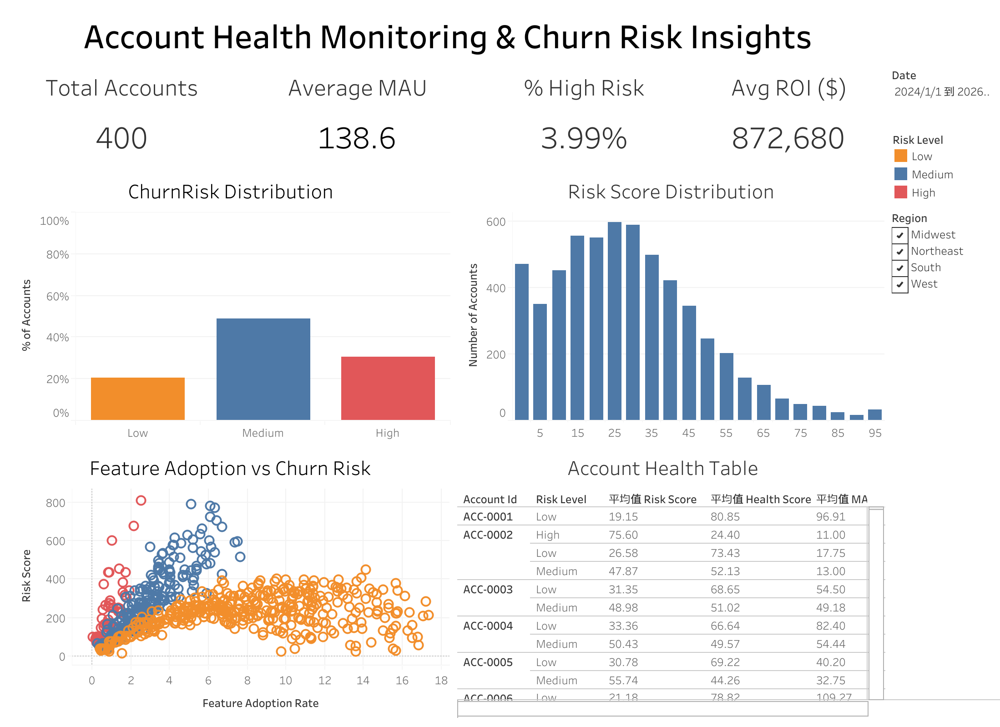

Featured Project
Built an end-to-end analytics workflow to define product health KPIs,
predict churn risk, and deliver real-time Slack alerts for high-risk accounts.
This project demonstrates how analytics can support account health,
retention strategy, and workflow-based decision-making in healthcare AI.
Implemented in Python using pandas, scikit-learn, and Slack webhook API.


Healthcare AI companies need better visibility into account health and churn risk.
Without clear monitoring, teams may miss early signs of disengagement and lose the opportunity
to intervene before an account declines further.

Defined core KPIs including MAU, usage rate, and churn rate, then built a logistic regression model
to generate account-level churn risk scores. Low usage rate and login frequency emerged as strong
signals associated with higher churn risk.

To make the model output actionable, I integrated risk-score results into Slack using a webhook.
High-risk accounts automatically trigger structured alerts with account ID and risk score,
demonstrating how predictive analytics can be embedded into workflows rather than left in static reports.
Operationalizing Analytics
This project goes beyond analysis by operationalizing a predictive model into a workflow.
After building a churn risk model using product usage data, I generated account-level risk scores
and defined a threshold to identify high-risk accounts.
Instead of keeping results in a dashboard alone, I connected the model output to a Slack-based alert
system using a webhook. This allows teams to monitor account health in real time and take action quickly
when risk signals appear.
This approach reflects how analytics can move from static reporting to workflow-integrated decision support,
bridging the gap between data insights and business execution.
Interactive Dashboard
Built an interactive Tableau dashboard to monitor account health, product adoption,
and churn risk across healthcare accounts. This dashboard combines KPI tracking,
risk segmentation, model output analysis, and account-level views to support
proactive decision-making.
Designed to support cross-functional decision-making across Product, Customer Success, and GTM teams.

Key components include KPI monitoring (Total Accounts, Average MAU, % High Risk, Avg ROI),
account risk distribution, risk score distribution, feature adoption vs. churn risk,
and an account health table for identifying high-risk accounts that may require intervention.